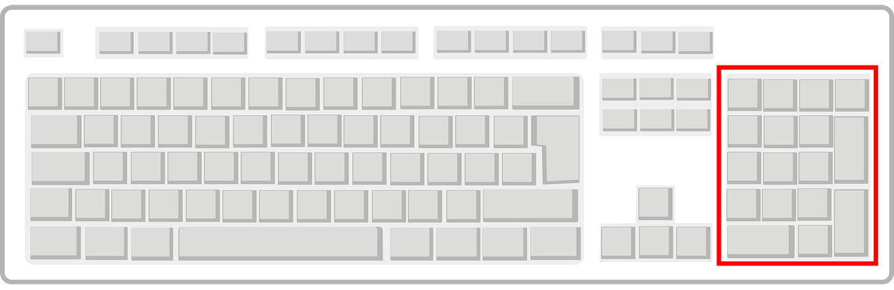

lectim
LECture TIMer
강의 실습 시간 타이머
{kind=link}
특징
- 직관적인 글자 크기 설정(창 크기에 꽉 맞게 글자 크기가 조정됨)
- 키보드를 이용한 초단위 시간 설정
- 키보드를 이용한 분단위 시간 설정
- 마우스 휠을 이용한 30초 단위 시간 설정
- 잠시 멈추기 / 다시 시작 기능
- 로고 보여주기
- 자유롭게 위치 설정
- 타이머가 0이 되면 소리로 알려주기
- 아래 쪽에 진행상태 바 표시
사용법
글씨 크기 조절
{kind=link}
{kind=link}
글씨 크기는 기본적으로 창의 크기에 맞춰 가장 큰 크기로 보여진다.
폰트
이 프로그램은 나눔고딕 글꼴을 사용한다. 따라서 가급적 나눔고딕 글끌을 설치하고 사용하자. 만약 이 글꼴이 없으면 임의의 폰트가 사용된다.
시간 설정
초단위 설정
{kind=link}
키보드의 영문 자판 윗부분의 숫자 키를 누르면 초단위로 시간이 설정된다.
예를 들어 3분을 설정하고 싶으면 숫자 키 1 8 0 을 순서대로 누른다.
타이머 시작은 엔터키이다.
분단위 설정

키보드의 키패드 부분의 숫자 키를 누르면 분단위로 시간이 설정된다.
예를 들어 3분을 설정하고 싶으면 숫자 키패드 3을 누른다.
타이머 시작은 엔터키이다.
{kind=link}
30초단위 설정
마우스 휠을 위아래로 움직이면 30초 단위로 시간이 설정된다.
예를 들어 3분을 설정하고 싶으면 마우스 휠을 위로 여러 번 올려주면 된다.
타이머 시작은 왼쪽 마우스 버튼이다.
타이머 강제 종료 1: 종료음 울리면서 멈추기
마우스 오른쪽 버튼을 누르면 타이머의 남은 시간이 0이 되면서 정상 종료 떄와 마찬가지로 종료음이 울린다.
타이머 강제 종료 2: 종료음없이 멈추기
키보드의 ESC 키를 누르면 타이머의 남은 시간이 0이 된다. 종료음은 없다.
타이머 일시 정지 / 다시 시작
키보드의 스페이스 바를 누르면 타이머가 잠시 멈춘다. 이 상태에서 스페이스 바를 다시 누르면 타이머가 다시 시작된다.
로고 변경 및 삭제
만약 로고를 변경하거나 삭제하고 싶으면 프로그램이 설치된 폴더 밑에 assets 폴더안에 있는 lx_logo_100.png를 변경하거나 삭제하면 된다. 로고를 보여주려면 파일명은 바꾸면 안되고, 그림 크기는 가로 100px * 세로 100px이다 .
만약 로고 파일을 삭제하거나 이름을 바꾸면 타이머의 로고가 안 보이게 된다.
종료 알림음 변경 및 삭제
만약 종료 알림음을 변경하거나 삭제하고 싶으면 프로그램이 설치된 폴더 밑에 assets 폴더안에 있는 bell-172780.mp3를 변경하거나 삭제하면 된다.
종료 알림음을 바꾸려면 다른 mp3 알림음을 파일명을 기존 파일명인 bell-172780.mp3으로 덮어쓰면 된다.
만약 이 mp3 파일을 삭제하거나 이름을 바꾸면 종료 알림음 소리가 안 들리게 된다.
주의 사항
이 프로그램은 아주 정밀하게 동작하도록 설계되지 않았습니다. 그래서 이 프로그램은 1시간에 5초 이내 정도의 오차가 발생할 가능성이 있습니다. 따라서 아주 정밀한 시간 계산이 필요하면 이 프로그램이 아닌 다른 방안을 찾으시기 바랍니다.
개발환경
- Windows App SDK(WinUI 3)
- winrt C++
- Visual Studio 2022
로그
ver 0.2
- 키보드로 분, 초 입력하는 기능 추가
- 타이머 잠시 정지, 다시 시작 기능 추가
- unpackaged로 전환
ver 0.1
- 마우스 휠로 30초 단위로 입력하는 기능 추가
- 프로그레스바 기능 추가.